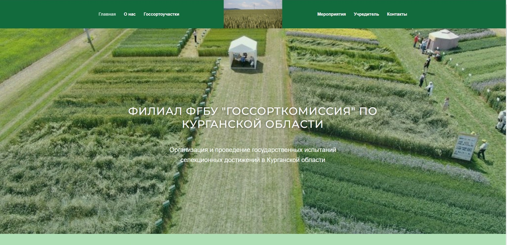

МОИ ПРОЕКТЫ
Назад

Филиал ФГБУ "Госсорткомиссия" по Курганской области. Сайт создан на конструкторе сайтов Tilda.
Сайт организации, в которой я работаю. Теперь и у нас есть свой собственный сайт.
 Цветочный магазин. Сайт создан с помощью технологий HTML, CSS, bootstrap.
Цветочный магазин. Сайт создан с помощью технологий HTML, CSS, bootstrap.
 Что мы знаем о совах? Сайт создан с помощью технологий HTML, CSS, JavaScript.
Сайт-тест об интересных фактах про сов.
Что мы знаем о совах? Сайт создан с помощью технологий HTML, CSS, JavaScript.
Сайт-тест об интересных фактах про сов.
 Нотный сборник. Прототип сайта с помощью программного обеспечения figma.com
создан в целях поиска нот определенных произведений для исполнения на фортепиано.
Нотный сборник. Прототип сайта с помощью программного обеспечения figma.com
создан в целях поиска нот определенных произведений для исполнения на фортепиано.